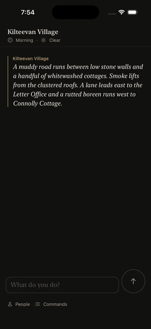
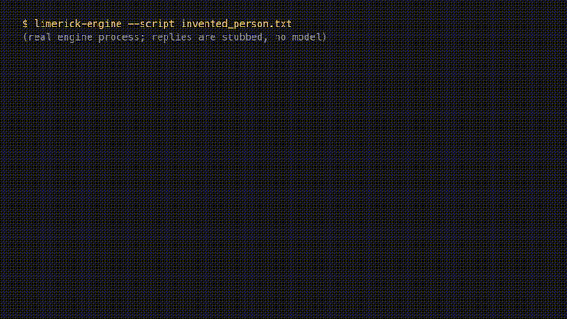

Issue 2295. The primary recording is the iPhone app running in the iOS simulator; the production-path test output follows it.

video (mp4)This is the real app code path (SwiftUI app, embedded Rust engine, the Endpoint client) on an iOS simulator, played against the scripted mock Endpoint the UI suites use (Phase2MockEndpointTransport), with a scripted reply. It is not a live model and not a physical iPhone. The recording is the UI test RundalePhase3UITests.testReplyNamingAnUnknownPersonIsCommittedAsWritten (passed in the recording run), paced with demo holds. The player travels to Connolly Cottage and asks Mícheál who is minding the cattle. The scripted reply streams in, naming Tadhg Mulvihill, who appears in no mod file. The transcript shows it exactly as written and the test asserts the committed row text verbatim. The app is then terminated and relaunched, and the same reply is still in the transcript, so it was committed and saved.
The reply names Tadhg Mulvihill, who does not exist in the parish. It is committed unchanged through the desktop host (drive_in_process) and the phone host (TurnEngine::resume): transcript event, conversation log, stream events and accepted action. Structurally incomplete or oversized replies still commit nothing.
running 3 tests test phone_path_commits_a_reply_naming_a_nonexistent_person_unchanged ... ok test desktop_path_commits_a_reply_naming_a_nonexistent_person_unchanged ... ok test an_incomplete_reply_still_commits_nothing ... ok test result: ok. 3 passed; 0 failed; 0 ignored; 0 measured; 0 filtered out; finished in 0.02s test parity_comparison_catches_a_dropped_dialogue_event ... ok test potato_patch_action_progresses_identically_in_legacy_and_real_loops ... ok test incomplete_candidate_has_zero_effects_across_modes ... ok test dialogue_turn_publishes_identical_event_across_legacy_and_real_loop ... ok test reply_naming_a_nonexistent_person_commits_identically_across_modes ... ok test grounded_task_assignment_is_identical_in_legacy_and_real_loops ... ok test unique_first_name_and_occupation_reveals_identity_across_turn_modes ... ok test parity_harness_keeps_game_time_frozen_under_host_delay ... ok test result: ok. 8 passed; 0 failed; 0 ignored; 0 measured; 0 filtered out; finished in 0.09s test tests::a_reply_naming_a_person_who_does_not_exist_commits_unchanged ... ok test result: ok. 1 passed; 0 failed; 0 ignored; 0 measured; 40 filtered out; finished in 0.03s

video (mp4)Secondary evidence, not the primary recording. The real limerick-engine --script process (not a unit test) is given this script; the /stub command is a legacy test path. The stubbed reply names a person the world does not have and ends in a bare capitalised word that an old parse step would have trimmed. The last JSON line is the engine's result: the reply reaches the player exactly as written. This is a terminal transcript of the engine process, not a physical-iPhone run and not a live model.
# A reply naming a person who does not exist is committed as written. /wait 30 /wait 5 /stub Peig Hannigan: Tadhg Mulvihill? Aye, the cartwright from beyond the bridge, a grand man altogether. Who sent you? Seamus talk to Peig Hannigan about Tadhg Mulvihill
{"command":"talk to Peig Hannigan about Tadhg Mulvihill","result":"npc_response","npc":"Peig Hannigan","dialogue":"Tadhg Mulvihill? Aye, the cartwright from beyond the bridge, a grand man altogether. Who sent you? Seamus","location":"Kilteevan Village","time":"Morning","season":"Spring","new_log_lines":["Peig Hannigan: Tadhg Mulvihill? Aye, the cartwright from beyond the bridge, a grand man altogether. Who sent you? Seamus"]}
Tests: limerick-core/tests/dialogue_commits_unchanged.rs, limerick-engine/tests/mode_parity.rs, limerick-mobile-ffi a_reply_naming_a_person_who_does_not_exist_commits_unchanged.